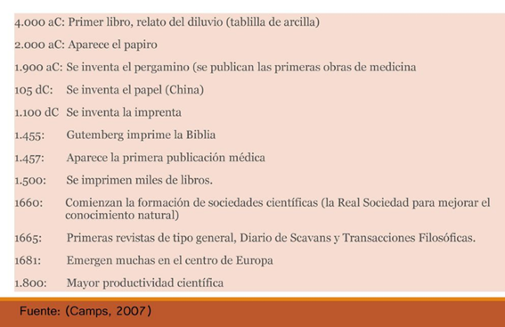
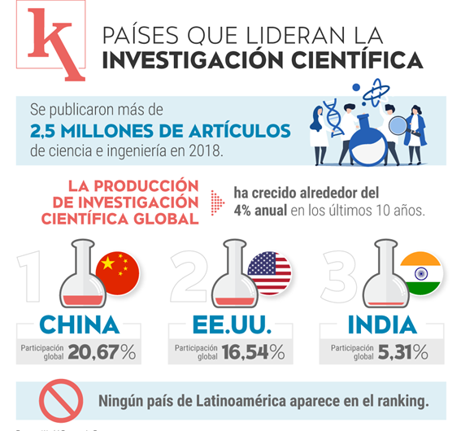
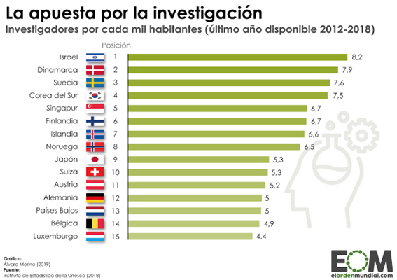
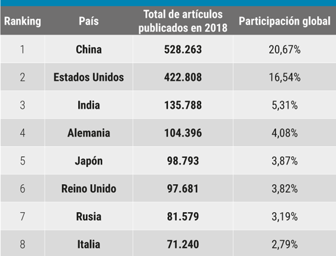
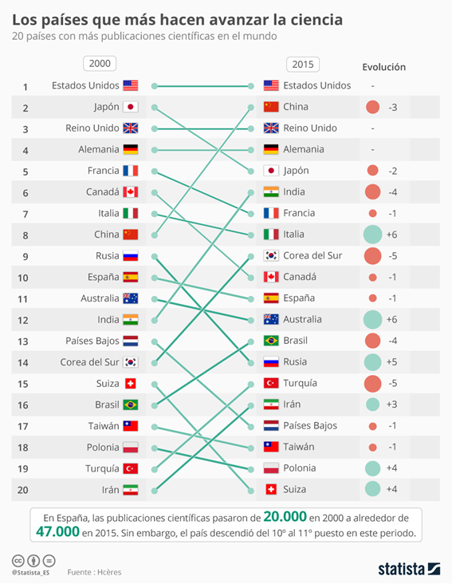
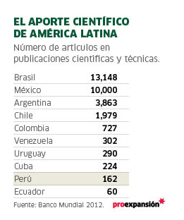
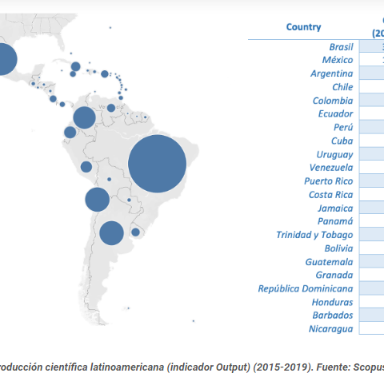
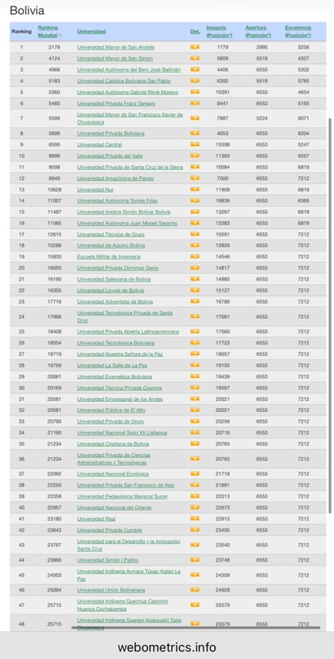
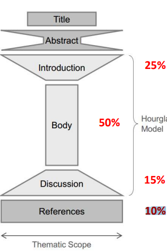

El artículo científico es un informe escrito y publicado que describe resultados originales de investigación
Es un texto de extensión breve que tiene como propósito comunicar los resultados de investigaciones, ideas, debates, de una manera clara y fidedigna

Uno de los grandes retos que enfrentamos, es el de poder comunicar nuestros conocimientos y experiencias a través de la literatura científica
No estamos acostumbrado a escribir, no existe una cultura para publicar.
Requiere tiempo, estudio y dedicación.
Existe poco estímulo para que los estudiantes y docentes escriban en revistas científicas.
"Definitivamente escribiendo, pero también leyendo "
Es una habilidad derivada de una combinación balanceada entre ciencia y arte, conocimiento e inspiración.
“Si tú tienes una manzana y yo tengo una manzana, y si las intercambiamos, entonces tú y yo seguiremos teniendo cada uno una manzana. Pero si tú tienes una idea y yo tengo una idea y las intercambiamos, entonces cada uno de nosotros tendrá dos ideas” George Bernard Shaw
Las habilidades de transformar información en un artículo publicado se desarrollan con la práctica.
Un mito es que muchos piensan que la única forma de publicar es enviar trabajos de investigación complejos, lo cual no es cierto, por Ejemplo se puede publicar casos interesantes de su práctica clínica, experiencias personales, análisis crítico constructivo de problemas, reseñas históricas, etc.
Por tanto, escribir bien ,es más que inspiración, se trata de un proceso de trabajo, disciplina y motivación que está al alcance de todos, es una habilidad que debe desarrollarse con la práctica.
Escribir es un arte, por lo que un articulo cientifico original es una obra de arte(Contreras & Ochoa, 2010)







¿Por qué hiciste la investigación?
¿Qué usaste y cómo lo usaste?
¿Qué encontraste?
¿Qué significa, qué implica lo que encontraste? - [¿Cuales son los hallazgos más importantes?]
¿Qué fuentes usaste?
